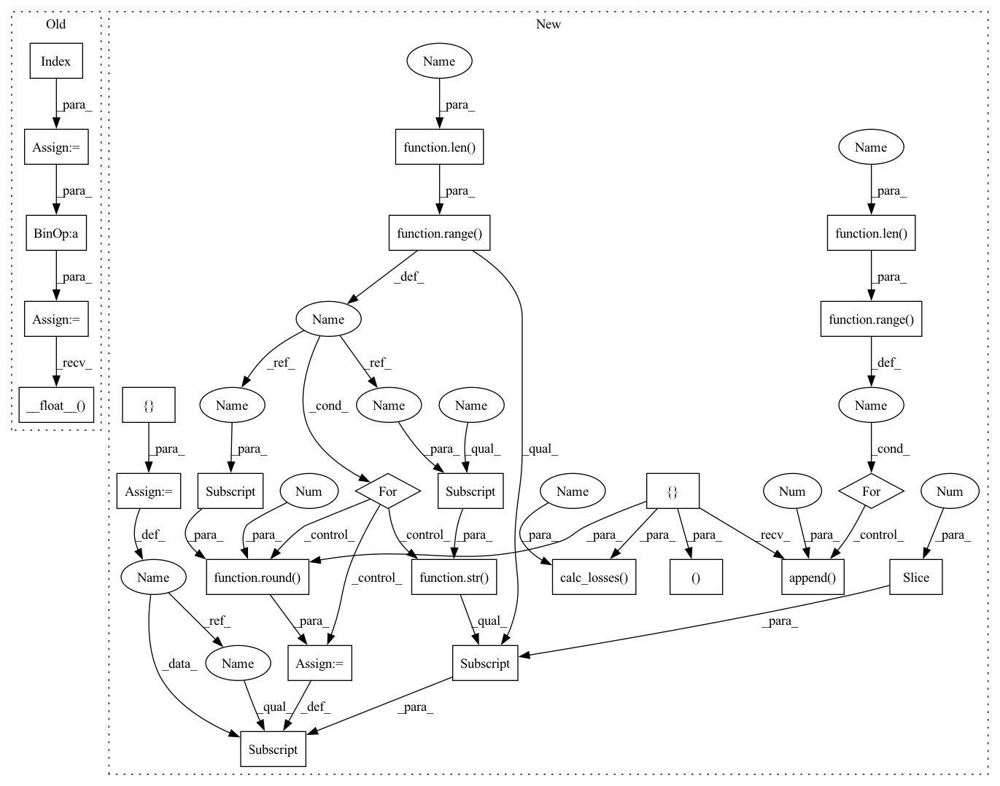

Pattern ID :33948

Before Change
rmse_cost = loss[0](hypothesis, Y_train)
// neg_cost = 0
""" STFT Loss """
stft_cost = loss[1](hypothesis, Y_train)
"""DBP Loss"""
// d_cost = loss[0](pred_d, d.view(-1, 1))
"""SBP Loss"""
// s_cost = loss[0](pred_s, s.view(-1, 1))
"""FFT Loss"""
// fft_cost = loss_fft(hypothesis, Y_train)
"""Total Loss"""
cost = rmse_cost + stft_cost // + d_cost + s_cost
// cost = fft_cost
cost.backward()
optimizer.step()
if not np.isnan(cost.__float__()):
train_cost_sum += cost.__float__()
train_neg_cost_sum += rmse_cost.__float__()
train_stft_cost_sum += stft_cost.__float__()
After Change
def train(model, dataset, loss, optimizer, scheduler, epoch, scaler=True):
model.train()
avg_cost_list = []
for _ in range(len(loss)):
avg_cost_list.append(0)
with tqdm(dataset, desc="Train{}".format(str(epoch)), total=len(dataset),
leave=True) as train_epoch:
for idx, (X_train, Y_train, d, s, size_class) in enumerate(train_epoch):
optimizer.zero_grad()
hypothesis = model(X_train, scaler=scaler)
avg_cost_list, cost = tu.calc_losses(avg_cost_list, loss,
hypothesis, Y_train,
idx + 1)
total_cost = np.sum(avg_cost_list)
temp = {}
for i in range(len(loss)):
temp[(str(loss[i]))[:-2]] = (round(avg_cost_list[i], 3))
train_epoch.set_postfix(losses=temp, tot=total_cost)
cost.backward()
optimizer.step()
In pattern: SUPERPATTERN
Frequency: 3
Non-data size: 25
Instances
Fragment ID: 97236170
Project Name: tvs-ai/pytorch_rppgs
Commit Name: 79fa5ea2fc22ff76197fc5272382574b54608880
Time: 2023-01-02
Author: forownsake@gmail.com
File Name: vid2bp/train.py
M Class Name: AnonimousClass
N Class Name: AnonimousClass
M Method Name: train(7)
N Method Name: train(7)
M Parent Class:
N Parent Class:
M File Name: vid2bp/train.py
N File Name: vid2bp/train.py
M Start Line: 10
M End Line: 67
N Start Line: 10
N End Line: 40
'>
Before Change
rmse_cost = loss[0](hypothesis, Y_val)
// neg_cost = 0
"""STFT Loss"""
stft_cost = loss[1](hypothesis, Y_val)
"""DBP Loss"""
// d_cost = loss[0](pred_d, dia)
"""SBP Loss"""
// s_cost = loss[0](pred_s, sys)
"""Total Loss"""
cost = rmse_cost + stft_cost// + d_cost + s_cost
valid_cost_sum += cost.__float__()
valid_avg_cost = valid_cost_sum / (idx + 1)
valid_epoch.set_postfix(rmse=rmse_cost.__float__(), stft=stft_cost.__float__(), tot=valid_avg_cost)
wandb.log({"Valid Loss": valid_avg_cost}, step=epoch)
// wandb.log({"Valid Loss": valid_avg_cost,
After Change
def validation(model, dataset, loss, epoch, scaler=True):
model.eval()
avg_cost_list = []
for _ in range(len(loss)):
avg_cost_list.append(0)
with tqdm(dataset, desc="Validation{}".format(str(epoch)), total=len(dataset), leave=True) as valid_epoch:
with torch.no_grad():
for idx, (X_val, Y_val, dia, sys, size_class) in enumerate(valid_epoch):
hypothesis = model(X_val, scaler=scaler)
avg_cost_list, cost = tu.calc_losses(avg_cost_list, loss,
hypothesis, Y_val,
idx + 1)
total_cost = np.sum(avg_cost_list)
temp = {}
for i in range(len(loss)):
temp[(str(loss[i]))[:-2]] = (round(avg_cost_list[i], 3))
valid_epoch.set_postfix(losses=temp, tot=total_cost)
// wandb.init(project="VBPNet", entity="paperchae")
// wandb.log({"Valid Loss": total_cost}, step=epoch)
'>
Fragment ID: 97236188
Project Name: tvs-ai/pytorch_rppgs
Commit Name: 79fa5ea2fc22ff76197fc5272382574b54608880
Time: 2023-01-02
Author: forownsake@gmail.com
File Name: vid2bp/validation.py
M Class Name: AnonimousClass
N Class Name: AnonimousClass
M Method Name: validation(5)
N Method Name: validation(5)
M Parent Class:
N Parent Class:
M File Name: vid2bp/validation.py
N File Name: vid2bp/validation.py
M Start Line: 29
M End Line: 58
N Start Line: 31
N End Line: 53
'>
Before Change
hypothesis = model(X_test, scaler=scaler)
"""Negative Pearson Loss"""
rmse_cost = loss[0](hypothesis, Y_test)
// neg_cost = 0
"""STFT Loss"""
stft_cost = loss[1](hypothesis, Y_test)
"""DBP Loss"""
// d_cost = loss[0](pred_d, dia)
"""SBP Loss"""
// s_cost = loss[0](pred_s, sys)
"""Total Loss"""
cost = rmse_cost + stft_cost // + d_cost + s_cost
test_cost_sum += cost.__float__()
test_avg_cost = test_cost_sum / (idx + 1)
test_epoch.set_postfix(rmse=rmse_cost.__float__(), stft=stft_cost.__float__(), tot=test_avg_cost)
if plot_flag:
plot_prediction(X_test[0], Y_test[0], [dia[0], sys[0], mean[0]], hypothesis[0], epoch)
After Change
model.eval()
plot_flag = True
avg_cost_list = []
for _ in range(len(loss)):
avg_cost_list.append(0)
with tqdm(dataset, desc="Test{}".format(str(epoch)), total=len(dataset), leave=True) as test_epoch:
with torch.no_grad():
for idx, (X_test, Y_test, dia, sys, size_class) in enumerate(test_epoch):
hypothesis = model(X_test, scaler=scaler)
avg_cost_list, cost = tu.calc_losses(avg_cost_list, loss,
hypothesis, Y_test,
idx + 1)
total_cost = np.sum(avg_cost_list)
temp = {}
for i in range(len(loss)):
temp[(str(loss[i]))[:-2]] = (round(avg_cost_list[i], 3))
test_epoch.set_postfix(losses=temp, tot=total_cost)
if plot_flag:
plot = plot_prediction(X_test[0], Y_test[0], [dia[0], sys[0], size_class[0]], hypothesis[0], epoch,
'>
Fragment ID: 97236178
Project Name: tvs-ai/pytorch_rppgs
Commit Name: 79fa5ea2fc22ff76197fc5272382574b54608880
Time: 2023-01-02
Author: forownsake@gmail.com
File Name: vid2bp/test.py
M Class Name: AnonimousClass
N Class Name: AnonimousClass
M Method Name: test(6)
N Method Name: test(5)
M Parent Class:
N Parent Class:
M File Name: vid2bp/test.py
N File Name: vid2bp/test.py
M Start Line: 53
M End Line: 84
N Start Line: 61
N End Line: 91